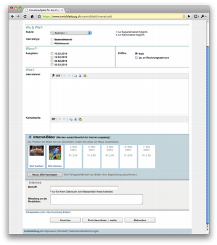

Blog
Handy-Vorwahl 077
Fast wie in alten (NATEL-C-)Zeiten! Die Mobiltelefonvorwahl 077 ist wieder ausgegraben worden. Wenn also auf dem Telefondisplay eine 077-Nummer erscheint, ist das kein unerwünschter Zeitsprung in längst vergangene NATEL- Zeiten, sondern ein Zeitgenosse mit einem "m-budget"-Abonnent!
Ausgerechnet die Migros hat für ihr "m-budget-mobile" die historische Vorwahl gewählt (oder wohl eher gewählt bekommen...).
Image upload panel
We just released a project including a nice image upload panel. The approach allows to upload images in a very convenient way.

upload images in jpg, png or gif format
file size limit
- resize the image
- ajax upload: page is not reloaded
- change oder of images by drag and drop
- delete uploaded images
- works in all browsers
Technical background
- grok based web application
- PIL (Python Image Libary) for the image resizing
- AJAX Upload
- JQuery UI for drag and drop
Import- / Export-Funktionalitäten in Plone
Zope/Plone lassen sich dank der umfangreichen Funktionalitäten gut als DMS einsetzen. Eine zentrale Anfordung dabei sind Import- bez. Export- Funktionalitäten.
Dazu gibt es in Plone unterschiedliche Ansätze:
- WebDAV
- Plone Desktop1
- Export als Zip-File
- Import von Zip-Files
Bei all den technischen Möglichkeiten zum schnellen Upload grösser Mengen an Inhalten - wie bespielsweise Bilder - sollte jedoch darauf geachtet werden, dass die entsprechenden Inhalte in jedem Falle noch zu klassifizieren sind. So kann sichergestellt werden, dass sich beispielsweise Bilder im Portal über die Suche finden lassen.
Plone WebDAV http://plone.org/documentation/faq/webdav-ftp/
PloneFilesZip http://plone.org/products/plonefileszip/
MassLoader http://plone.org/products/massloader/
1 nicht open Source, sondern unter einer kommerziellen Lizenz bei Enfold erhältlich: http://www.enfoldsystems.com/Products/Desktop
Innovation durch Zufall: von Blogger zu Twitter
In der aktuellen Ausgabe des Economist findet sich sich ein interessanter Artikel über Evan Williams. Williams ist der Gründer von Blogger und der Initiator von Twitter.
Williams ist der Überzeugung, dass sich Innovationen oftmals am Rande anderer Projekte ergeben und daraus entstehen, dass man sich die Frage stellt, was man aus einer bestehenden Lösung entfernen kann um so etwas Neues zu schaffen.
Der Punkt des "side projects" zeigt sich daran, dass das Team von Williams zur Entstehungszeit von Blogger an einem anderen, komplexen Projekt zur online Kommunikation und Kollaboration arbeitete. Zur internen Kommunikation wurde eine kleine Applikation in Form einen online-Tagebuchs verwendet. Offenbar war dies das Einzige am ehrgeizigen Projekts was funktionierte und aus dem eigentlichen Nebenprojekt wurde die Idee des Blogs geboren.
Der Ansatz zur Reduktion auf das Wesentliche lässt sich nachvollziehen, wenn die Sites von Yahoo und Google vergleicht. Google ist die Weiterentwicklung von Yahoo, indem Sinne, dass der Fokus auf dem Suchfeld liegt und alles andere radikal entfernt ist.
So lässt sich auch das neueste Projekt von Williams erklären. Twitter ist ein Blog, reduziert auf 140 Zeichen und die fundamental simple Frage: Was machst du gerade?
Der "reduced to the max"-Ansatz scheint sehr erfolgsversprechend; Twitter war im Jahr 2007 “next big thing”, direkt nach dem IPhone und Facebook.
http://www.economist.com/business/displaystory.cfm?story_id=10328123
Klingelton für Junge
Ein Handy-Klingelton der nur von Personen unter 25 Jahren wahrgenommen wird. Unmöglich? Nein, eine Schweizer Firma bringt ihn auf den Markt...
Ursprünglich wurden sogenannte Mosquito-Töne in Shopping Centers eingesetzt um Teenager Gangs von den schicken Läden fernzuhalten. Der Trick dahinter basiert auf einem bekannten Phänomen: Mit zunehmendem Alter verliert das menschliche Gehör die Fähigkeit sehr hohe Töne wahrzunehmen. Es beginnt mit ungefähr 20 Jahren und betrifft zuerst die höchsten Frequenzen im Bereich 18 bis 20 kHz. Die Ladenbesitzer spielen nun einfach einen sehr hohen Dauerton, der den Teenies mit der Zeit auf die Nerven geht und sie aus dem Laden treibt. Die kaufkräftige ältere Kundschaft kriegt davon nichts mit.
Englische Schüler haben nun den Spiess umgekehrt und sich solche hochfrequenten Töne als Ringtone installiert. Damit ist es möglich, ein hereinkommendes SMS oder einen Anruf zu hören, auch wenn das Handy «stummgeschaltet» in der Jacke oder unter dem Bank verstaut sein muss. «Klingelt» das Handy während der Stunde, hört sein jugendlicher Besitzer das laut und deutlich, der Lehrer oder die Lehrerin kriegt davon nichts mit.
Zur Zeit ist die Bestellung bei infowing.ch noch kostenlos.
http://www.infowing.ch/web/sounds/mms/248-teenbuzz.mp3 (Kligelton als mp3)
http://www.infowing.ch/web/de/static-content/specials_teenbuzz.htm (Infos / Bestellung)